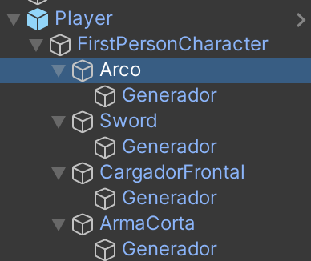
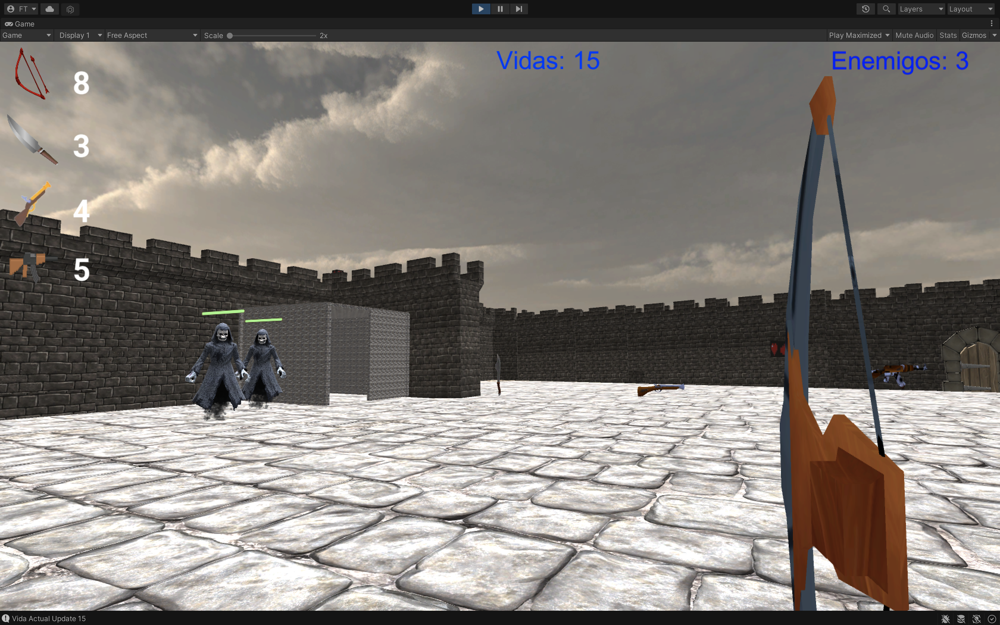

En principio pondremos un plano con 4 paredes. Necesitaremos el Paquete FirstPersonController.unitypackage.
• Será un FirstPersonController que hemos descargado previamente.
• Tendrá asociado un script Player.cs.
• Con 4 armas:
o Están dentro del Player/FirstPersonCharacter junto con su generador de munición.

• Descargar 4 armas, 4 municiones y 4 sonidos de disparos.
• Cada Arma tendrá asociado otro Script Arma.cs. Que es lo que pasaremos por parámetro al Player.cs en un
Array.
Crear un GO vacío para poder tener casi todos los sonidos SoundManager.cs. Tendrá un array AudioSource y solo pasaremos el clip y el volumen. Lo haremos más adelante.
• Variables más destacadas:
o Arma[] armas = new Arma[4].
o int armaActiva.
o Imagen[] imagen del Canvas.
o TextMeshProUGUI[] textoMunicion del Canvas.
o Imagen sangre.
• Start.
o Recoger los colores de la sangre (cuando tengamos el Canvas).
o DesactivarArmas().
o ActivarDesactivarImagenesCanvasArmas(false)
• Update.
o Tecla Q para mostrar o no las armas del FPS.
- La primera vez que damos a la Q aparecerá un Canvas con todas las Armas (el arma activa
en color para saber que esta seleccionada), la munición que tiene por defecto y el arma activa en el FPS.

o Las armas las activaremos con números del 1 al 4 mediante Input.GetKeyDown(KeyCode.Alpha1)
Alpha1….Alpha4.
- Usaremos Método ActivarArma con el parámetro del arma que esta activa. Primero se
desactivarán todas las Armas y después el activamos el arma.
o Botón izquierdo ratón haremos el Disparar() con Input.GetMouseButtonDown(0)
NO podemos tener ningún valor (de tipo númerico, string…..) puesto en cualquier método. Todo tiene que estar parametrizado con variables para tenerlo todo más controlado.
• Métodos.
o ActivarArma (int armaActiva).
- DesactivarArmas.
- Cambiar Color del Canvas del arma seleccionada.
imagen[armaActiva].color = new Color(255, 0, 0, 255).
- Activar el Arma.
o DesactivarArmas.
- Lo haremos con un foreach recorriendo todo su array.
- Habrá que dejar las imágenes del Canvas con su color original.
o Disparar.
- Dependiendo que munición sea ApretarGatillo ó ApretarGatilloBomba que son métodos
que están en Arma.cs. Luego lo hacemos.
o IncrementarVida.
- Incrementamos la vida a la variable VidaActual. Lo usaremos cuando recojamos las Cajas
de Vida a lo largo del juego.
- El Player siempre tendrá un número máximo de vidas.
o RecibirDanyo (int danyo).
- Recibirá por parámetro el daño que le da dependiendo de que Enemigo le toque.
- Sonido de muerte del Player.
- Mostrar la Imagen de Sangre del Canvas. En principio estará transparente (Canal Alpha
) e ira apareciendo poco a poco y luego desaparecerá poco a poco. Método MostrarSangre().
- Si no tenemos vida llamar método Morir().
El RecibirDanyo lo llamaremos desde el Enemigo Movil cuando choque con el Player.
o IEnumerator MostrarSangre().
- Usaremos 2 for.
• Uno para que aparezca poco a poco cambiando el canal Alpha a+=0.01.
• Y el otro para que desaparezca poco a poco cambiando el canal Alpha a-=0.01.
• Y llamaremos Método CambiarColorSangre().
o CambiarColorSangre().
- Color c = new Color(r, g, b, a) r,g,b las recogeremos nada más empezar el juego.
- Este color habría que asignárselo a la sangre.color,
o Morir volvería a la escena.
o Disparar().
- A una de las armas hare que no me deje disparar siempre mediante un bool
armas[armaActiva].ApretarGatillo().
- Si tenemos un proyectil que sea una bomba podremos hacer
armas[armaActiva].ApretarGatilloBomba().
o ActivarDesactivarImagenesCanvasArmas(false/true). Va con parámetro.
- Recorrer el Array imagen y textoMunicion activamos o desactivamos dependiendo del parámetro.
El ApretarGatillo y ApretarGatilloBomba lo haremos en el Script de Arma.cs.
• GO Vacio.
• Tendrá asociado un script SoundManager.cs donde pondremos un parámetro que será un array con todos
los sonidos que necesitamos.
• Y un componente AudioSource.
• Creamos un Método SeleccionAudio(int índice, float volumen).
o PlayOneShot.
Cada Arma tendrá asociado un script Arma.cs (el mismo).
• Variables más destacadas:.
o Quaternion[] bombas.
o int contadorBombas.
• Start.
Hay que crear un Array de bombas con una longitud de contadorBombas para que la podamos usar
en el Método ApretarGatilloBomba.
o bombas = new Quaternion[contadorBombas]
Creamos un Array de bombas de tipo Quaternion para ir guardando sus rotaciones aleatorias.
Método ApretarGatillo • Si tengo munición se podrá disparar. • Creo la munición y la lanzo. AddRelativeForce Método ApretarGatilloBomba saldrán varias bombas con rotaciones distintas • Si tengo munición se podrá disparar. • For hasta contadorMunicion o bombas[i] = Random.rotacion o Crear la bomba en su punto de generación que llamare nuevaBomba o Hay que ir destruyendo la nuevaBomba con un tiempo para que no se nos cargue la memoria o A la nueva bomba se le da un giro distinto nuevaBomba.transform.rotation = Quaternion.RotateTowards(nuevaBomba.transform.rotation, bombas[i], esparcir) o Se lanza con AddRelative Force Método ModificarMunicion Hay que quitar la munición y actualizarla en el Canvas.